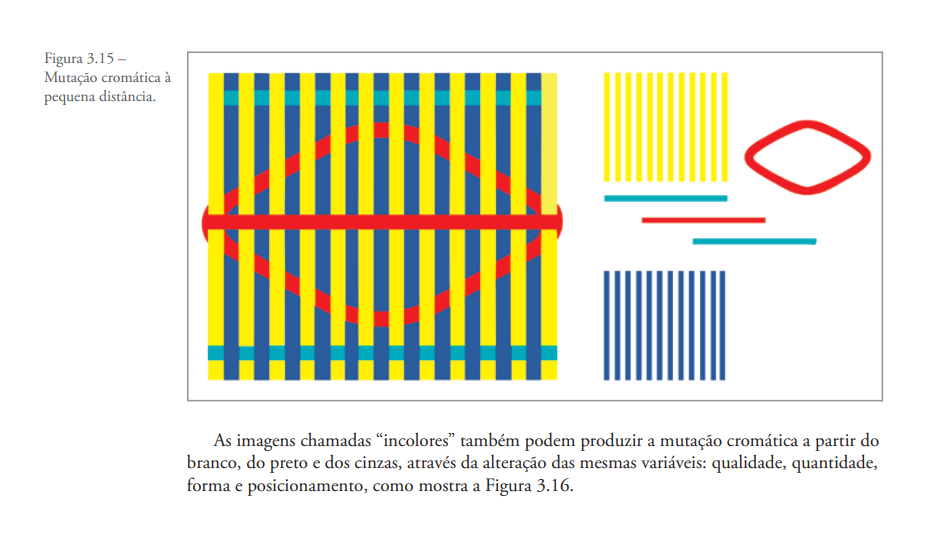
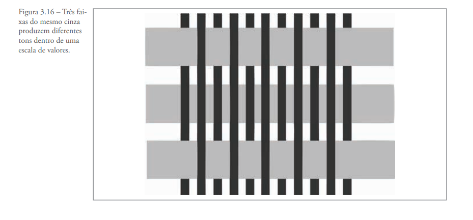
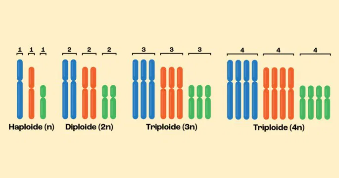

MUTAÇÃO
CROMÁTICA
Explore o universo das cores, suas propriedades físicas, percepção visual e aplicações na arte, design e tecnologia.
Explore o universo das cores, suas propriedades físicas, percepção visual e aplicações na arte, design e tecnologia.
Por mutações cromáticas englobamos todas essas manifestações das cores fisiológicas, que acontecem devido aos contrastes simultâneos, sucessivos ou mistos, ou seja, fenômenos onde fisiologicamente há alterações das cores (induzidas) na presença de outras (indutoras). Apesar das várias críticas a respeito de seus experimentos ópticos, as conclusões de Newton a respeito das cores não sofreram grandes alterações. A partir dessas conclusões, sabe-se que a reflexão de certos raios luminosos pode atingir o seu máximo, isto é, o objeto colorido pode atingir o seu pico de saturação. Quando isso acontece, a retina também é sensibilizada no seu máximo, exaltando as cores complementares que estavam submersas na periferia do objeto.
Essas cores complementares fazem parte dos fenômenos que são, na sua essência, opostos à cor indutora (cor de contraste, mutação cromática e cor inexistente, chamadas cores induzidas) e aparecem constantemente na natureza. Raramente os percebemos porque nossos olhos estão constantemente submetidos à função reguladora e interpretadora do cérebro.


Viveu entre 1452 e 1519. Foi uma das principais figuras do chamado Renascimento italiano e produziu obras que são bastante conhecidas e imitadas, como a “Monalisa”
Foi o gênio máximo do Renascimento. Embora famoso pela pintura na Capela Sistina, sua verdadeira paixão era a escultura. Ele considerava a escultura a forma de arte mais nobre
Foi um dos maiores expoentes do pós-impressionismo, mas viveu uma vida marcada por dificuldades financeiras e psicológicas. Ele começou a pintar apenas aos 27 anos,
CRIE SUA MUTAÇÃO
Objetivo: Busque algo que você possa utilizar da mutação cromática na prática, ou seja, busque um
material
uma pintura ou ate mesmo um objeto para que através da COR ou ILUMINAÇÃO você possa fazer uma
alteração.
Faça alteração das cores originais para criar efeitos visuais diferentes, mudar emoções da cena ou
transmitir outra mensagem visual.
